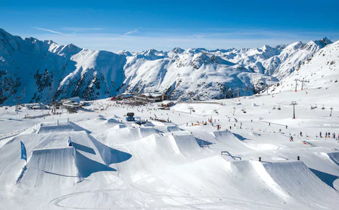
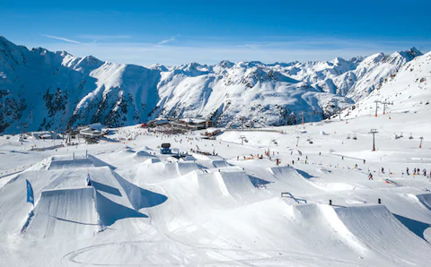
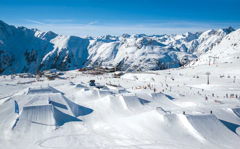

Here you will be able to see all the beautiful hills we have to offer.
Ranging from beginner to advanced.
Advanced hills

"This is hill has very light snow blowing all over and is the longest hill we offer, this hill is best for people who like to enjoy the time they spend on the way done the slopes, Offering great veiws.
"Slopes 200 km, Ski routes 577 km, Elevation difference 1609 m (Base 470 m - Mountain 1980 m), Ski lifts yes. number of lifts: 8
157.
The Family Favourite hill, this hill offers a nice steady downhill, and has a great view of the sunset over the trees.
"Slopes 190 km, Ski routes 110 km, Elevation difference 1609 m (Base 510 m - Mountain 1860 m), Ski lift: yes, Number of lifts: 3
98.
"This is our most skilled hill, but most loved due to the easy to hit jumps and ramps placed on the way down the hill.
"Slopes 310 km, Ski routes 160 km, Elevation difference 1609 m (Base 675 m - Mountain 1500 m), Ski lift: yes, Number of lifts: 3
219.